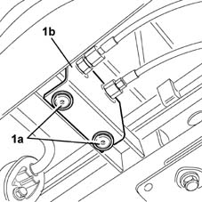
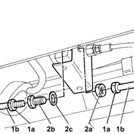
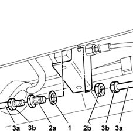

1043B20 intermediate fitting of delivery or return pipes between gpl resevior and pressure regulator r r
- Path
- Procedures > 10 ENGINE UNIT > 1043 LGP TANK AND PIPES > 1043B gpl fuel circuit pipes > 1043B20 intermediate fitting of delivery or return pipes between gpl resevior and pressure regulator r r
- Kind
- repair procedure (removal / refitting; the operation number is the code)
- Applies to
- engines: 1.6 16v; all production periods; only with equipment: GPOWER
- Interactive page
- https://sloeber94.github.io/elrnDB-fMltpl/en/#/2891504
Applies to: engines: 1.6 16v; all production periods; only with equipment: GPOWER and Euro 3
 Removing
Removing
 Refitting
RefittingDrain the LPG delivery and return lines from the tank to the pressure reglator. Follow the correct procedure and observe the regulations shown 1043A02 lpg system lines pipe draining operations .
Return the vehicle to the workshop and place it on a lift.
Disconnect the battery negative terminal.
1. Drill off rivets (1a) securing intermediate connector bracket (1b).

Applies to: engines: 1.6 16v; all production periods; only with equipment: GPOWER and Euro 3
1. Undo fittings (1a), then disconnect both sections of pipe (1b), cylinder end and regulator end.
2. Undo retaining nut (2a) and remove connector (2b); recover the underlying washer (2c).

Applies to: engines: 1.6 16v; all production periods; only with equipment: GPOWER and Euro 3
Refitting
Removing1. Fit the washer on the connector.
2. Fit connector (2a) and secure with nut (2b).
3. Connect pipe (3a) and tighten connectors (3b) to torque.
 | Fastening | Component | Ø | Value (daNm) |
|---|---|---|---|---|
3b | Connector | L.P/G SUPPLY.RETURN PIPE CONNECTOR.. | - | (supply) 1.4 |
| Fastening | Component | Ø | Value (daNm) |
|---|---|---|---|---|
3b | Connector | L.P/G SUPPLY.RETURN PIPE CONNECTOR.. | - | (return) 1.6 |

Applies to: engines: 1.6 16v; all production periods; only with equipment: GPOWER and Euro 3
Fit the intermediate connector bracket and secure using new rivets.
Tighten the connectors for the LPG delivery and return pipes from tank to pressure regulator on the pressure regulator that were loosened previously to drain the LPG present in this pipe section.
| Fastening | Component | Ø | Value (daNm) |
|---|---|---|---|---|
- | Niplo | LPG DELIVERY PIPE FROM CONNECTOR TO REGULATOR. | M10 x 1 | (regulator) 1 |
| Fastening | Component | Ø | Value (daNm) |
|---|---|---|---|---|
- | Niplo | LPG RETURN PIPE FROM CONNECTOR TO REGULATOR. | M10 x 1 | (regulator) 1 |
1043A04 gpl system and pipes check for leaks .
Connect the battery negative terminal.
Remove the vehicle from the ramp.